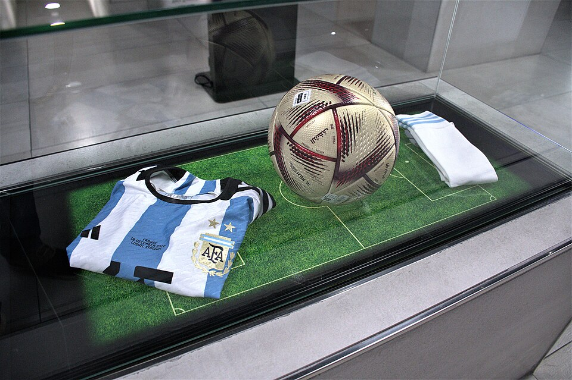

Argentina campeón del mundo: la tercera estrella, 36 años después
En una final que ya se considera la mejor de la historia, la Selección venció a Francia por penales tras un 3 a 3 inolvidable. Messi, doblete y consagración eterna; Dibu Martínez, la atajada del siglo; y un país entero abrazado en las calles.

Argentina es campeón del mundo por tercera vez en su historia, y tuvo que ganarlo dos veces. Con goles de Messi y Di María dominó la final ante Francia con una superioridad que rozó la humillación, hasta que Mbappé, en dos minutos del final, empató un partido que estaba terminado. En el alargue volvió a ponerse en ventaja con otro de Messi, volvió a empatar Mbappé de penal —tres goles suyos en una final, cosa no vista desde 1966—, y cuando el destino parecía ensañado, apareció la zurda del arquero Emiliano «Dibu» Martínez para desviar el remate de Kolo Muani en la última jugada: la atajada que separó la gloria del abismo.
En los penales, el mismo Dibu contuvo el disparo de Coman y la Scaloneta no falló: Montiel convirtió el cuarto y el estadio de Lusail, pintado de celeste y blanco, se vino abajo. Messi, a los 35 años y en su quinto mundial, levantó por fin la única copa que le faltaba, elegido mejor jugador del torneo como broche de una campaña en la que cargó al equipo sobre los hombros desde la derrota inicial con Arabia Saudita. La imagen del capitán alzado en andas, con la copa en la mano, entra directo al álbum de las fotos eternas del deporte.
La copa cierra una historia que empezó en el barro: tras el fracaso de Rusia 2018, la selección quedó en manos de un entrenador sin currículum, Lionel Scaloni, al que muchos consideraron un interinato de emergencia. El interinato ganó la Copa América en el propio Maracaná —primer título mayor en veintiocho años—, hilvanó un invicto de treinta y seis partidos y llegó a Qatar como candidato, hasta que Arabia Saudita lo derribó en el debut. De aquel golpe salió el campeón de hoy: «que la gente confíe, que este grupo no los va a dejar tirados», pidió Messi aquella tarde amarga, y lo que siguió fueron seis finales ganadas una detrás de la otra, la última dos veces.
El torneo tuvo una banda de sonido que no salió de ningún estudio: «Muchachos», una canción nacida en las tribunas que canta a Malvinas, a Diego alentando desde el cielo y a la mamá de Messi, y que en Doha terminaron tarareando hasta los que no entendían la letra. Decenas de miles de argentinos viajaron al desierto vaciando ahorros —hubo quien vendió el auto sin dudarlo—, y los que se quedaron convirtieron cada partido en un feriado no escrito: persianas bajas, aulas vacías, la vida entera pactada alrededor de un horario. Pocas veces un país sincronizó el corazón con tanta puntualidad: a la hora de los penales, la Argentina fue el territorio con más plegarias por metro cuadrado del planeta.
En Buenos Aires y en cada pueblo del país, millones de personas se volcaron a las calles en el festejo más multitudinario que se recuerde: el Obelisco quedó chico para un abrazo de punta a punta del mapa. Treinta y seis años esperó la Argentina este título, desde aquel México 86 de Maradona, y de algún modo la historia cerró su círculo: la tercera estrella une a Diego y a Leo en la misma camiseta. El fútbol, que tantas veces fue pena para este país, hoy fue exactamente lo contrario.